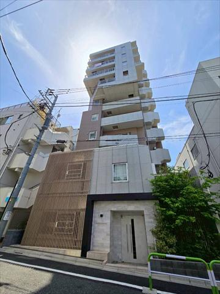
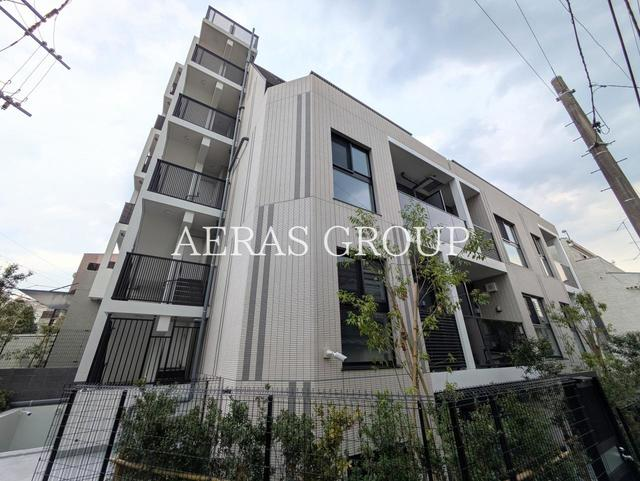
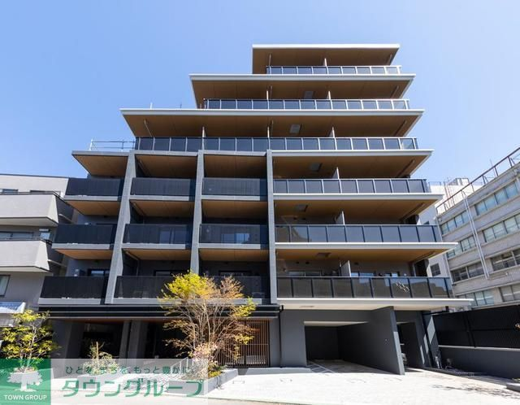
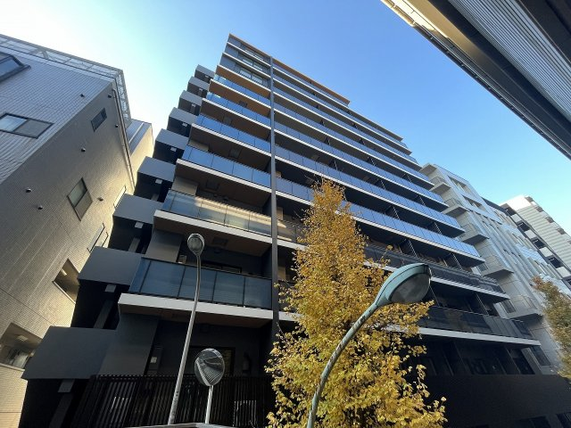
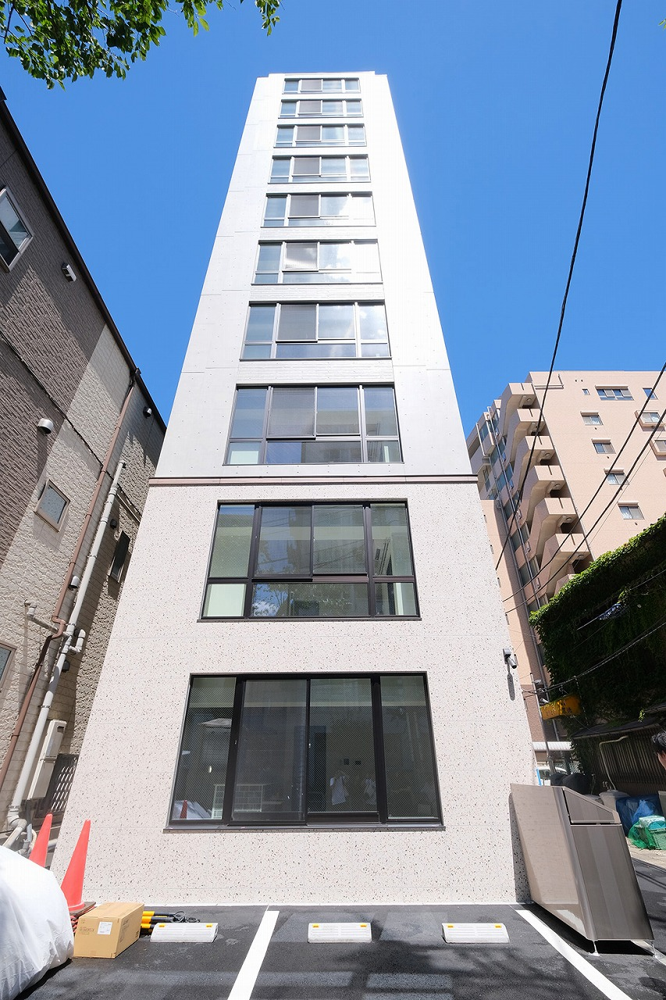

 ◎ ハザード安全🐾 ペットOK10階建 22.4万この中で最安 文京区 大塚（茗荷谷）東京メトロ丸ノ内線「茗荷谷」駅 徒歩10分 ワーフ文京茗荷谷 1LDK50.3㎡文教エリア 台地：小石川台地／洪水・液状化リスク低。落ち着いた文京区で安い。 SUUMOで見る ハザードマップ
 ◎ ハザード安全🐾 ペットOK7階建・新築 24.4万新築 豊島区 東池袋東京メトロ有楽町線「東池袋」駅 徒歩8分 クレストコート東池袋（新築） 1SLDK52.0㎡池袋すぐ 台地：豊島台地／新築でピカピカ。池袋まで徒歩圏で便利。 SUUMOで見る ハザードマップ
 ◎ ハザード安全🐾 ペットOK8階建 29.0万ブランドマンション 文京区 本郷都営大江戸線「本郷三丁目」駅 徒歩6分 パークアクシス文京本郷 1SLDK51.0㎡3路線利用可 台地：本郷台地／人気の「パークアクシス」。都心ど真ん中で安全。 SUUMOで見る ハザードマップ
 ○ おおむね安全🐾 ペットOK12階建 24.0万いちばん高層 板橋区 大山都営三田線「板橋区役所前」駅 徒歩5分 ワンルーフレジデンス板橋大山 1LDK55.9㎡12階建で広め 台地寄り（○）／高層12階建。近くに石神井川の低地があるので住所で要確認。 SUUMOで見る ハザードマップ
 ○ おおむね安全🐾 ペットOK10階建 29.9万いちばん広い 68㎡ 品川区 西五反田（不動前）東急目黒線「不動前」駅 徒歩3分 エスペランサ不動前かむろ坂 1LDK68.6㎡駅3分・最大の広さ 坂の上（○）／「かむろ坂」の高台。目黒川の谷が近いので住所で要確認。 SUUMOで見る ハザードマップ